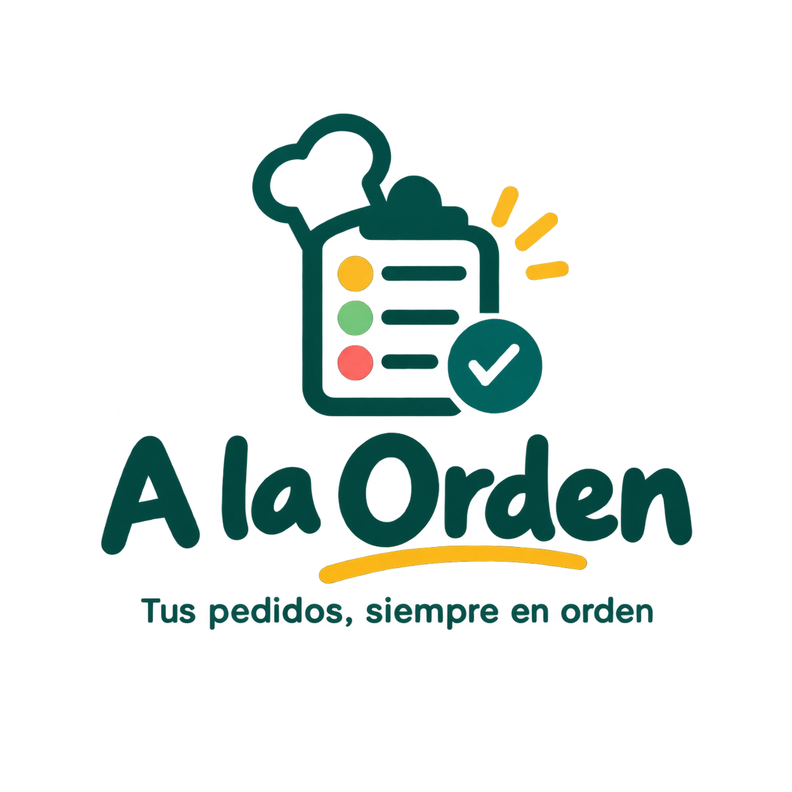
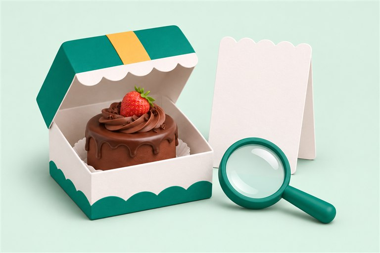

El pedido correcto.
PED-1042 · 18 nov. 2026
Torta de chocolate · Confirmado
GASTRONOMÍA + ORGANIZACIÓN
Dos propuestas para que los pequeños emprendimientos de comida y repostería encuentren el pedido correcto y sigan con lo que mejor saben hacer.

PED-1042 · 18 nov. 2026
Torta de chocolate · ConfirmadoLA STARTUP QUE NOS INSPIRA
A la Orden organiza los pedidos de pequeños emprendimientos de comida y repostería. Nuestra propuesta se enfoca en una necesidad concreta: encontrar el pedido correcto, incluso cuando varios comparten el mismo nombre.
Identidad original de la startup · Creada por estudiantes del IFTS 16
Una búsqueda. Dos situaciones.
La cantidad de coincidencias define el siguiente paso.
Propuesta conceptual de flujos agénticos.
Los procesos se explican; no se ejecutan ni consultan servicios reales.
DEL NOMBRE AL PEDIDO
Un futuro agente consultaría el registro de pedidos. Si hay ambigüedad, la decisión vuelve a la persona.
Todo empieza con una pregunta: “¿Cómo está mi pedido?”. La persona que atiende toma el nombre del cliente y un futuro agente lo usaría para consultar el registro.
Con una sola coincidencia, la búsqueda directa (R3) permite consultar el detalle. Con varias, la elección guiada (R4) necesita que la persona identifique el pedido correcto. Este mapa conecta ambas propuestas y sus alternativas.
CÓMO SE CONECTA TODO
Quien atiende recibe la pregunta y toma el nombre para iniciar la búsqueda.
Nombre de ejemplo: Lucía PérezBusca por nombre y recupera las coincidencias.
La cantidad define el siguiente paso: una, varias o ninguna.
Una coincidencia R3
Varias coincidencias R4
Sin coincidencias
Se informa que no hay resultados y se pide revisar el nombre, sin inventar un pedido.
Revisar los casosEn los dos recorridos elegís un caso antes de avanzar paso a paso. En “Casos de revisión” comparás las respuestas esperadas ante situaciones como pedidos con el mismo nombre y fecha, una búsqueda sin resultados o un error de consulta.
BÚSQUEDA DIRECTA Referencia R3
Cuando hay un único resultado, el agente recuperaría su detalle y su estado actual. Una consulta directa para saber cómo está ese pedido.
SENTENCIA ORIGINALSi la búsqueda por nombre encuentra un único pedido, el sistema muestra su detalle y su estado actual.
Entrada: nombre a buscar.
Herramienta futura: consulta del registro de pedidos, con identificador, nombre, fecha, detalle y estado.
Decisión: comprobar si hay exactamente una coincidencia.
Salida: detalle y estado actual del único pedido registrado. La consulta no cambia su estado.
La regla define el caso de una coincidencia. Proponemos derivar a R4 si hay varias y pedir revisar el nombre si no hay ninguna.
Si falla la herramienta o falta el estado, el agente informaría el problema y solicitaría revisión a la persona responsable. No inventaría información.
Estas alternativas son decisiones de diseño del grupo.
UN SOLO PEDIDO · RECORRIDO PROPUESTO
Fin · Pedido consultado
Alternativa propuesta por el grupo
Fin · Sin inventar un pedido
Informar y solicitar revisión humana. La cantidad de coincidencias es desconocida.
Las alternativas y el manejo del error son decisiones del grupo. La consulta no modifica el estado del pedido.
ELECCIÓN GUIADA Referencia R4
El agente presentaría las coincidencias con su identificador y fecha. La persona elegiría qué pedido consultar antes de que se abra su detalle.
SENTENCIA ORIGINALSi la búsqueda encuentra varios pedidos del mismo nombre, el sistema solicita elegir uno mediante su identificador único, mostrando la fecha como dato auxiliar, antes de abrir su detalle.
Entrada: consulta de la persona con su nombre. Este recorrido se activa cuando el registro devuelve varias coincidencias.
Herramienta futura: registro de pedidos y consulta del detalle por identificador único.
Intervención humana: elegir un identificador de la lista. La fecha ayuda a reconocer el pedido, pero no lo identifica por sí sola.
Salida: detalle del pedido elegido, únicamente después de la selección.
Dos pedidos pueden compartir nombre y fecha: se distinguen por su identificador único.
Proponemos comprobar que el identificador elegido siga en los resultados. Si no es válido o el pedido ya no está disponible, se informa y se pide elegir de nuevo.
Sin selección, se mantiene la lista. El agente no elige el primer pedido ni el más reciente. Si la consulta falla, solicita revisión humana. La validación y el manejo de errores son decisiones del grupo.
ELEGÍ TU PEDIDO · RECORRIDO PROPUESTO
Continuar en R3 para consultar el único pedido.
Informar y pedir revisar el nombre, sin inventar un pedido.
Fin · Pedido consultado
Volver a la lista de pedidos
Informar y solicitar revisión humana. No se interpreta el error como cero resultados.
* Decisión del grupo. Sin selección, se espera a la persona. La fecha es auxiliar; el identificador distingue cada pedido.
RECORRAMOS LA PROPUESTA
Casos ilustrativos para revisar la lógica. Elegí una situación y compará la respuesta esperada.
La búsqueda devuelve PED-1042. El agente mostraría su detalle y su estado actual, sin pedir elegir entre resultados.
La condición de R3 se cumple; la de R4 no.
DRAGONBYTE · GRUPO 23
Estudiantes del IFTS 29. Retomamos la identidad de A la Orden, creada en el IFTS 16, para diseñar dos recorridos claros y explicar cada decisión.
Full Stack · GRUPO 23
Desarrollador de software con 4 años de experiencia en la industria, actualmente trabajando con PHP, SQL y JavaScript sobre un sistema de certificación laboral. Estudio la Tecnicatura Superior en Desarrollo de Software en el IFTS N°29 y me interesa entender el proyecto completo: no solo el código, sino también los servidores, la seguridad y los costos que lo sostienen. Al equipo aporto experiencia real trabajando con Git, APIs REST y trabajo en equipo.
Full Stack · GRUPO 23
Soy desarrolladora de software especializada principalmente en backend, con experiencia en C#, .NET, SQL Server y Delphi. Actualmente curso la Tecnicatura Superior en Desarrollo de Software para continuar ampliando mi formación.
Me interesan especialmente el desarrollo backend, las bases de datos, la arquitectura de software y la aplicación de inteligencia artificial al desarrollo. Me gusta analizar problemas, encontrar soluciones y trabajar en equipo, combinando experiencia técnica con aprendizaje continuo.
Full Stack · GRUPO 23
Empecé a programar durante la pandemia buscando una vocación y ya no paré. Hoy curso el segundo año de la Tecnicatura Superior en Desarrollo de Software y trabajo como desarrollador Full Stack, construyendo sistemas WMS de gestión de depósitos con .NET, SQL Server y Angular.
Cuando algo falla busco el origen del problema y me incomoda la complejidad innecesaria: un buen código es el que le facilita las cosas a quien lo lee después. Al equipo le aporto experiencia real con datos, circuitos administrativos y APIs, y orden para llegar al final. Fuera de la pantalla, juego y miro fútbol.
Full Stack · GRUPO 23
Soy desarrolladora de software con experiencia en tecnologías como C#, SQL Server y Python.
Actualmente, estudio la Tecnicatura Superior en Desarrollo de Software en el IFTS N°29.
Me interesa especialmente el desarrollo web y de aplicaciones móviles. Me gusta trabajar en equipo y aprender nuevas tecnologías a través de desafíos.
DragonByte · Grupo 23 · Desarrollo de Sistemas Web, Front End · IFTS 29 · 2026.